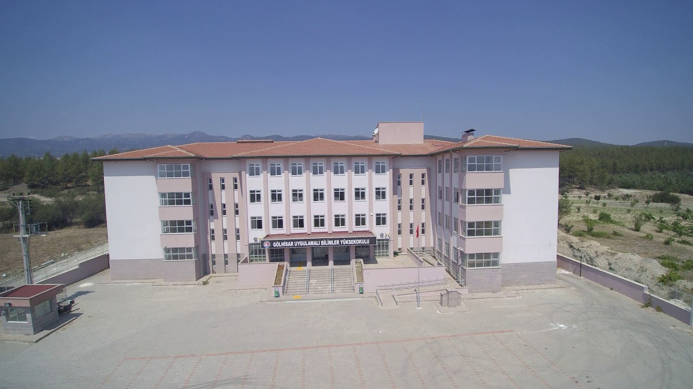

Gölhisar Uygulamalı Bilimler Meslek Yüksekokulu
Gölhisar Uygulamalı Bilimler Yüksekokulu Mehmet Akif Ersoy Üniversitesi, Gölhisar Uygulamalı Bilimler Yüksekokulu 2017 yılında kurulmuştur. 2017-2018 eğitim-öğretim döneminde, Yükseköğretim Kurulu Başkanlığı'nın ''Bölüm/Program'' konulu 06.11.2017 tarih ve 75902 sayılı yazısı ile; Bilgisayar Teknolojileri ve Bilişim Sistemleri Bölümü- Bilgisayar Teknolojileri ve Bilişim Sistemleri ABD, Sigortacılık ve Sosyal Güvenlik Bölümü- Sigortacılık ve Sosyal Güvenlik Anabilim Dalı, Tapu Kadastro Bölümü -Tapu Kadastro Anabilim Dalı olmak üzere üç programda lisans düzeyinde 4 yıllık eğitim vermesine karar verilmiştir. Yüksekokulumuz konum olarak Burdur ilinin Gölhisar ilçesinde bulunmaktadır. İlçenin Denizli girişinde, Kredi Yurtlar Kurumu (KYK) karşısında olup fiziki yapılanma olarak 7288 m2’lik kendi kampüsünde, 1140m2’lik oturma alanı içerisinde, 5700 m2’lik kapalı alana ve 1000 m2’lik sosyal tesislere sahiptir. Yüksekokulumuzda 12 adet derslik, 8 adet laboratuvar için sınıf, 1 Bilgisayar laboratuvarı, 1 elektronik laboratuvarı, 1 3D çalışma laboratuvarı, 1 adet internet bağlantılı çalışma salonu, 1 adet mini amfi ile modern eğitim vermek için öğrencilerimizi beklemektedir. Gelecek olan öğrencilerimizin sosyal, kültürel ve sportif faaliyetleri için ise 1 adet basketbol-voleybol sahası 1 adet kapalı spor salonu bulunmaktadır. Bunların dışında Gençlik Merkezi ve Üniversitemizin diğer birimlerinde bulunan fiziki olanaklarından faydalanabilmektedir. 2018-2019 Eğitim Öğretim döneminde BTBS (Bilgisayar Teknolojileri ve Bilişim Sistemleri) bölümüne, 2019-2020 Eğitim Öğretim döneminde de Tapu ve Kadastro Bölümüne öğrenci alan okulumuz mezunlar vermeye başlamıştır. Halihazırda 6 Öğretim Üyesi, 6 Öğretim Görevlisi ve 5 idari personel ve çalışan ile öğrencilerimize ve ülkemize eğitim hizmeti vermektedir. Yüksekokulumuz önümüzdeki öğretim döneminde hızlı bir şekilde büyümeye devam ederek ülkemizin ihtiyacı olan yetişmiş insan gücüne katkı sağlamaya devam edecektir. Öğrencilerimize; öğrenimleri sırasında çalışma hayatları boyunca gerekli tüm teorik bilgilerin yanı sıra, mevcut laboratuvarlar sayesinde adına yakışır şekilde, pratik beceriler de etkin bir biçimde verilmektedir. Ayrıca öğrencilerimizin gelecekte içinde bulunacakları iş dünyasının rekabetçi şartları altında başarılı olmaları için, eğitim ve öğretim faaliyetlerinin yanında sosyal ve kültürel etkinliklere de ağırlık verilmektedir. Ülkemizde geçekleştirilen birçok ulusal ve uluslar arası etkinliğe katılımları okulumuz aracılığı ile sağlanmaktadır.